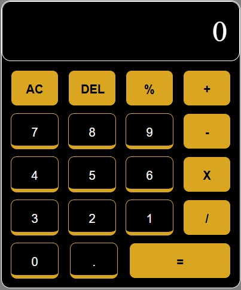
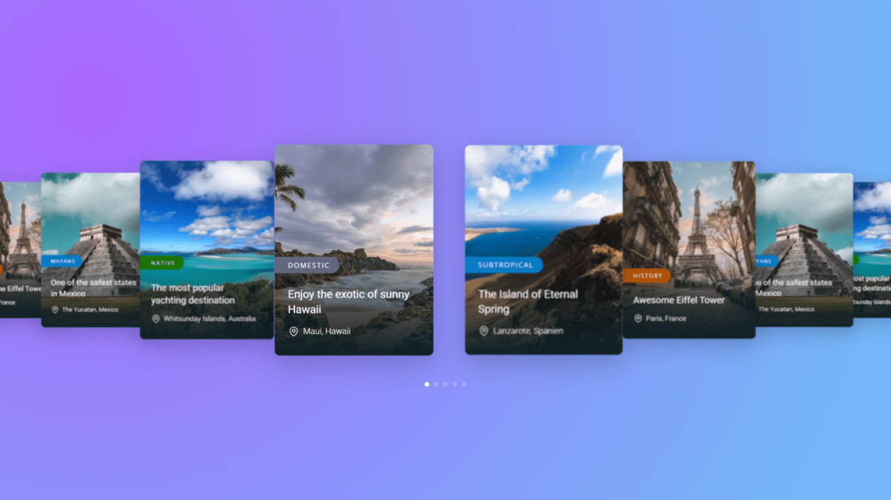
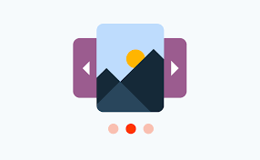

-
Calculator
A user-friendly and efficient calculator that can perform basic arithmetic operations such as addition, subtraction, multiplication, and division.
View Project -
Carousel
a visually appealing and interactive slider that can display multiple images or content
View Project -
Simple carousel
a visually appealing and interactive slider that can display multiple images or content
View Project
-
Facebook
A replication of Facebook homepage as a project. This project aimed to recreate the Facebook homepage's layout, design, and functionality.
View Project -
Netflix

A replication of Netflix homepage as a project. This project aimed to recreate the Netflix homepage's layout, design, and functionality.
View Project